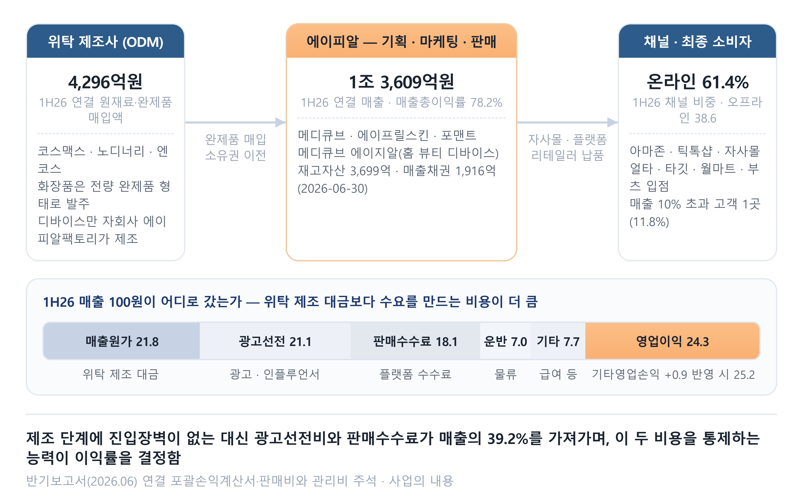
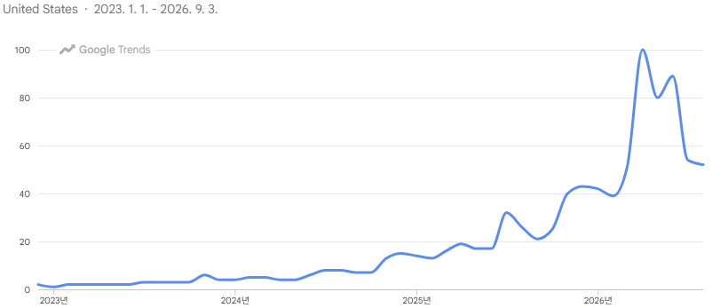
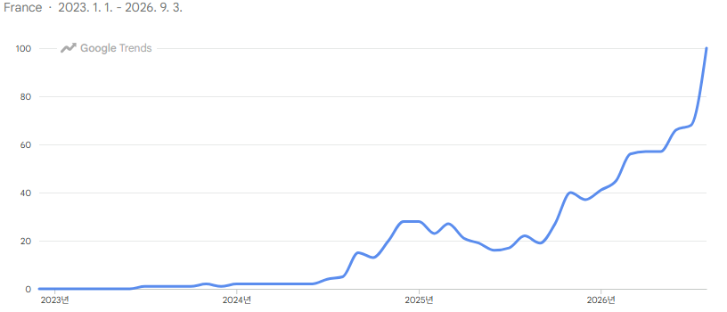
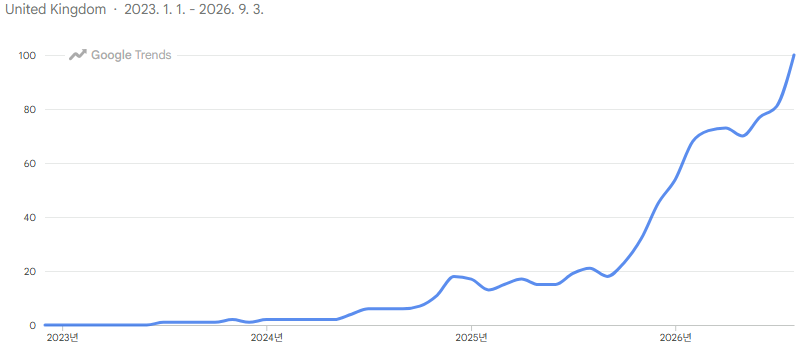

투자논지공장을 갖지 않고 브랜드만 소유한 화장품사임. 화장품 전량을 코스맥스·노디너리에 위탁하므로 해자 후보는 브랜드 하나뿐이고, 그 브랜드가 판촉 일정과 무관하게 관심을 붙들어 두는지가 논지의 전부임. 1H26 수출 비중 90.5%·북미 47.6%로 국내 매출은 이미 9.4%까지 내려감.
밸류에이션브랜드 peer 3사 평균 18.4배를 4 시나리오에 공통 적용해 목표주가 316,554~851,239원. 현재가는 Base 461,178원을 13.6% 밑돎. 장기로는 PBR 23.46배를 FY28F ROE 64.3%로 회수하는 데 7.9년이 걸리며, 5년 보유는 연 -12.6%, 10년 보유는 연 +19.8%임.
리스크미국 내 medicube 구글 검색 지수가 2026년 4~6월 정점 뒤 하락 전환함. 광고선전비 비중은 1H25 16.7%에서 1H26 21.1%로 올라 성장을 비용으로 사고 있고, 재고자산은 6개월 만에 2.2배가 돼 회전율이 2.6회에서 2.2회로 떨어짐. 최대 고객 비중도 1.9%에서 11.8%로 올라감.
1회사 개요
항목
내용
항목
내용
종목/코드
에이피알 / 278470 (KOSPI)
시가총액
15조 1,999억원 (2026-09-03)
설립
2014년 10월 10일
상장
2024년 2월 27일 (KOSPI)
대표이사
김병훈 (창업자)
결산월
12월
본사
서울 송파구 롯데월드타워
임직원수
751명 (2026-06-30)
발행주식수
37,438,155주 (자기주식 0주)
현재가
406,000원 (2026-09-03)
FY25 매출
1조 5,273억원 (전년 대비 +111.3%)
FY25 영업이익
3,655억원 (OPM 23.9%)
1H26 매출
1조 3,609억원 (전년 동기 +129.2%)
1H26 영업이익
3,428억원 (OPM 25.2%)
사업 부문
화장품·뷰티 80.9% · 디바이스 18.0% (1H26)
연결 범위
종속회사 15사 (2026-06-30)
사업보고서(2025.12)·반기보고서(2026.06) 연결 기준 · 종가 2026-09-03
에이피알은 화장품과 홈 뷰티 디바이스 브랜드사임. 2014년 10월에 설립해 2024년 2월 유가증권시장에 상장했고, 메디큐브·에이프릴스킨·포맨트를 직접 기획해 국내외 온·오프라인 채널에 넘김. 화장품은 코스맥스·노디너리 등에 완제품 위탁 생산을 맡기며 자체 제조는 홈 뷰티 디바이스뿐임.
1H26 매출 1조 3,609억원 가운데 수출이 1조 2,323억원으로 90.5%를 차지함. 회사가 제시한 2026년 연간 가이던스는 매출 3조원에 영업이익률 24~26%임.
2산업 분석
2.1 제조와 브랜드의 분업
K-뷰티 브랜드사는 공장을 갖지 않음. 제품 기획과 마케팅, 가격 결정만 맡고 제조는 ODM(제조자 개발생산) 업체에 넘김. 에이피알도 화장품 전량을 코스맥스·노디너리·엔코스 등에 완제품으로 발주하며 1H26 연결 매입액은 4,296억원임.

<그림 1> 사업 구조
매출원가는 매출의 21.8%에 불과하나 광고선전비 21.1%와 판매수수료 18.1%가 영업비용의 대부분을 차지함. 회사의 수익은 브랜드 인지도와 매대 확보 능력에서 나오며, 그 힘이 얼마나 오래 가는지를 확인해야 함.
2.2 지역별 수출 성장률과 시장 침투율
한국 화장품 수출은 2025년 10%, 2026년 7월 누계로는 27.6% 증가한 68억달러를 기록해 높은 성장률을 시현하고 있음.
지역
2025년 증가율
2025년 비중
2026년 누계 증가율
2026년 누계 비중
전체
+10%
100.0%
+27.6%
100.0%
미국
+13%
18.6%
+39%
19.8%
유럽
+44%
18.2%
+65%
23.6%
중국
—
—
-2.4%
—
관세청·Trass 집계 (교보증권 2026-08-18) · 증가율 일부는 BNK투자증권(2026-08-21)
2025년에는 미국 18.6%와 유럽 18.2%로 미국이 앞섰으나 2026년 누계에는 유럽 23.6%, 미국 19.8%로 순서가 바뀌었음. 화장품 수출의 최대 시장이 중국에서 미국으로, 또 미국에서 유럽으로 바뀌고 있는 추세임.
항목
북미
유럽
산출 근거
지역 화장품 소매 시장 (억달러)
1,400
1,240
유로모니터 기준 연간 소매 시장
2025년 한국 화장품 수출액 (억달러)
17.5
17.1
북미는 미국향, 유럽은 대륙 기준
K-뷰티 침투율
1.25%
1.38%
수출액 ÷ 지역 시장 규모
에이피알 2025년 매출 (억원)
6,088
1,125
회사 실적발표 지역별 매출
에이피알 점유율 (2025년)
0.31%
0.065%
매출 ÷ 원화 환산 시장 (1,400원/달러)
에이피알 점유율 (2026년 추정)
0.77%
0.30%
교보증권 2026년 추정 매출 기준
유로모니터·Trass (교보증권 2026-08-18) · 2026년 점유율은 교보증권 추정 매출 기준
K-뷰티 침투율은 북미 1.25%, 유럽 1.38%에 머물러 있음. 그 안에서 에이피알 몫은 각각 0.31%와 0.065% 비중을 차지하고 있음. 아직 침투율은 낮아 성장 가능성이 있기는 하나 2026년 기준 전체 수출의 90% 이상이 인디 브랜드에서 나올 만큼 경쟁자 수도 빠르게 늘고 있음.
3사업 분석
3.1 매출 구성
뷰티 디바이스 비중이 2024년 43.3%에서 1H26 18.0%로 내려앉았음. 같은 기간 화장품이 80.9%까지 올라오면서 회사의 정체성이 디바이스 제조사에서 화장품 브랜드사로 옮겨 감.
사업 부문
2024
2025
1H26
1H26 비중
화장품·뷰티
3,385
10,771
11,008
80.9%
뷰티 디바이스
3,126
4,070
2,446
18.0%
기타 (널디·포토그레이)
716
432
154
1.1%
합계
7,228
15,273
13,609
100.0%
사업보고서(2025.12)·반기보고서(2026.06) 주요 제품 및 서비스 · 연결 기준 · 억원
디바이스 매출 자체가 줄어든 것은 아님. 2025년 4,070억원으로 전년 대비 30.2% 늘었으나 화장품이 같은 기간 218.2% 늘면서 비중이 뒤집힘.
지역
2025
2025 비중
1H26
1H26 비중
전년 동기 대비
북미
6,088
39.9%
6,479
47.6%
+260.5%
아시아
4,239
27.8%
2,569
18.9%
+39.8%
유럽
1,125
7.4%
2,289
16.8%
+362.4%
한국
2,991
19.6%
1,286
9.4%
-14.3%
기타
795
5.2%
986
7.2%
+235.4%
합계
15,238
100.0%
13,609
100.0%
+129.2%
회사 실적발표 기준 지역별 매출 (교보증권 2026-08-18 도표 70) · 억원
3.2 유통채널 분석
온라인 비중은 2024년 75.8%에서 1H26 61.4%로 내려왔음. 온라인 매출이 감소한 것이 아니라 얼타·타깃·월마트 등 미국 오프라인 매대가 새로 붙으며 분모가 커진 영향으로 봐야함.
항목
2024
2025
1H25
1H26
온라인 비중
75.8%
66.6%
65.4%
61.4%
오프라인 비중
24.2%
33.4%
34.6%
38.6%
매출 10% 초과 고객 수
없음
1곳
1곳
1곳
해당 고객 매출 (억원)
137
1,557
685
1,603
해당 고객 비중
1.9%
10.2%
11.5%
11.8%
사업보고서(2025.12)·반기보고서(2026.06) 주요 고객 공시 · 2024년은 10% 미만
3.3 비용 구성과 이익률
매출총이익률이 2024년 75.2%에서 1H26 78.2%로 3.0%p 올랐음. 같은 기간 판매관리비율은 58.2%에서 53.9%로 4.3%p 내려왔고 영업이익률은 17.0%에서 25.2%로 8.2%p 개선됨.
항목
FY24
FY25
1H25
1H26
매출액 (억원)
7,228
15,273
5,938
13,609
매출총이익률
75.2%
76.6%
75.9%
78.2%
광고선전비 비중
19.6%
17.5%
16.7%
21.1%
판매수수료 비중
13.0%
16.5%
14.0%
18.1%
운반비 비중
8.2%
7.4%
8.3%
7.0%
그 밖의 판매관리비 비중
17.4%
11.3%
13.5%
7.7%
판매관리비율
58.2%
52.7%
52.5%
53.9%
기타영업손익 비중
—
—
-0.4%
+0.9%
영업이익률
17.0%
23.9%
23.1%
25.2%
사업보고서(2025.12)·반기보고서(2026.06) 판매비와 관리비 주석 · 연결 기준
광고선전비 비중이 1H25 16.7%에서 1H26 21.1%로 4.4%p 올랐음. 판매수수료도 14.0%에서 18.1%로 4.1%p 올라 매출을 두 배 이상 늘리는 동안 수요를 만드는 비용이 함께 늘었음. 운반비 비중은 8.3%에서 7.0%로 오히려 내려왔음.
영업이익률 2.1%p 개선은 매출총이익률 2.3%p 상승과 기타영업손익 1.3%p 개선이 판매관리비율 1.4%p 상승을 넘어선 데서 나왔음. 판매관리비 안에서는 그 밖의 항목이 5.8%p, 운반비가 1.3%p 줄어 광고·수수료 증가분을 상당 부분 상쇄했음.
3.4 경제적 해자
이 회사에는 공장이 없음. 화장품 전량을 코스맥스·노디너리 같은 외부 제조사에 맡기므로 처방과 설비에서 나오는 진입장벽은 애초에 후보가 아니고 자체 생산은 매출의 18.0%인 디바이스에만 해당함. 남는 후보는 브랜드 하나이며, 브랜드가 해자인지는 관심이 얼마나 오래 붙어 있는지로 확인해야 함.
구글 트렌드에서 미국 내 영문 브랜드명 medicube의 검색 지수는 2026년 4월~6월 최고치를 기록한 뒤 하락 전환함. 다만, 미국 아마존 상위 100위 안에 든 에이피알 제품 수는 1Q26 최대 9개에서 2Q26 16개로 늘었고 프라임데이가 끝난 7월에도 14개 이상을 유지하고 있음. 품목도 기초 화장품에서 모공패드·멀티밤 스틱·바디필링류로 넓어져 단일 히어로 제품 하나에 걸린 구조가 아님.

<그림 2> 구글 트렌드 — 미국 내 medicube 검색 지수 (2023.1~2026.9)
다만 유럽 지역은 미국과 달리 시장 초도 진입 국면에 속하여 지속 우상향하는 추세를 보이고 있음.

<그림 3> 구글 트렌드 — 유럽 medicube 검색 지수

<그림 4> 구글 트렌드 — 유럽 medicube 검색 지수 (계속)
4재무 추정
4.1 최근 5년 결산 실적
매출은 2021년 2,591억원에서 2025년 1조 5,273억원으로 4년 만에 5.9배가 됐음. 같은 기간 영업이익률은 5.5%에서 23.9%로 18.4%p 올라감.
항목
2021
2022
2023
2024
2025
매출액
2,591
3,977
5,238
7,228
15,273
매출 증가율
—
+53.5%
+31.7%
+38.0%
+111.3%
영업이익
143
392
1,042
1,227
3,655
영업이익률
5.5%
9.9%
19.9%
17.0%
23.9%
지배주주순이익
114
290
815
1,076
2,897
주당순이익 (원)
328
816
2,249
2,875
7,765
자기자본이익률 (평균자본)
19.4%
35.1%
55.0%
41.4%
75.3%
배당성향
0.0%
0.0%
0.0%
0.0%
65.8%
지배주주자본
660
993
1,969
3,235
4,458
사업보고서(2021.12~2025.12) 요약연결재무정보 · 억원
2024년에 영업이익률이 19.9%에서 17.0%로 한 번 내려갔음. 상장 첫해에 광고선전비 비중을 19.6%까지 끌어올린 탓이며 2025년에 17.5%로 낮추면서 회복됨.
4.2 운전자본과 현금흐름
1H26 영업활동현금흐름은 864억원임. 같은 기간 순이익 2,588억원의 33.4%에 그쳤고 차이를 만든 것은 운전자본에서 빠져나간 2,171억원임.
항목
FY23
FY24
FY25
1H26
재고자산
565
1,097
1,655
3,699
매출채권및기타채권
230
479
911
1,916
매입채무및기타채무
386
684
1,431
2,474
재고자산회전율 (회)
—
2.2
2.6
2.2
영업활동현금흐름
1,078
791
3,410
864
유형자산 취득
97
450
154
168
현금및현금성자산
1,253
904
1,544
945
사업보고서(2025.12)·반기보고서(2026.06) · 회전율은 연환산 매출원가 기준 · 억원
재고자산이 6개월 만에 1,655억원에서 3,699억원으로 2.2배가 됐음. 미국·유럽 행사 물량과 현지 안전재고를 미리 쌓은 데 따른 것이며 회전율은 2.6회에서 2.2회로 떨어짐. 매입채무도 1,431억원에서 2,474억원으로 함께 늘어 재고 증가분의 절반을 위탁 제조사 신용으로 감당했음.
2026년 6월 말 기준 차입금이 없고 1H26 유형자산 취득은 168억원에 그쳤음. 성장에 드는 자금이 설비보다 재고와 마케팅으로 흘러감.
5밸류에이션
5.1 중·단기 트레이딩 가치
브랜드 비교기업 3사의 2027년 예상 주가수익비율(PER) 산술평균은 18.4배임. 아모레퍼시픽 20.3배와 LG생활건강 18.9배가 위에 있고 달바글로벌이 15.9배로 아래에 있음.
비교 대상
사업 영역
예상 PER
기준
아모레퍼시픽
국내 화장품 브랜드
20.3배
2027년 예상
LG생활건강
국내 화장품 브랜드
18.9배
2027년 예상
달바글로벌
K-뷰티 브랜드
15.9배
2027년 예상
브랜드 peer 평균
위 3사 산술평균
18.4배
2027년 예상
적용 PER
peer 평균 그대로 · 할인·할증 없음
18.4배
4 시나리오 동일
Bloomberg·BNK투자증권 추정 (2026-08-20 종가 기준)
적용 배수는 18.4배이며 4 시나리오에 공통으로 씀. 적용 연도도 FY28E로 통일하고 시나리오 차이는 북미·유럽 점유율과 아시아·한국 매출, 영업이익률에서만 냄. peer 배수가 2027년 기준이라 1년치 이익 성장분은 배수에 반영되지 않음.
항목
Bear FY28E
Base FY28E
Bull FY28E
Best FY28E
북미 점유율
1.10%
1.40%
1.75%
2.20%
유럽 점유율
0.50%
0.70%
0.95%
1.25%
아시아·기타 매출 (억원)
9,000
11,000
13,500
16,500
한국 매출 (억원)
2,200
2,500
2,800
3,100
매출액 (억원)
41,440
53,092
67,092
84,420
영업이익률
20.0%
23.0%
25.0%
27.0%
영업이익 (억원)
8,288
12,211
16,773
22,793
지배주주순이익 (억원)
6,441
9,383
12,805
17,320
EPS (원)
17,204
25,064
34,202
46,263
적용 PER (배)
18.4
18.4
18.4
18.4
목표주가 (원)
316,554
461,178
629,317
851,239
현재가 대비
-22.0%
+13.6%
+55.0%
+109.7%
출처 — 시장 규모는 유로모니터 · 환율 1,400원/달러 · 법인세율 25.0% · 영업외손익 +300억 · 종가 2026-09-03
Bear 아마존 순위가 밀리고 판촉비가 늘어나는 경우
시장 규모는 Base와 같게 두고 점유율과 영업이익률만 내렸음. 북미 1.10%는 2026년 0.77%에서 오르기는 하되 상승 폭이 절반으로 꺾이는 수준이며, 아마존 상위 100위 제품 수가 다시 한 자릿수로 내려가는 경우에 해당함.
영업이익률 20.0%는 광고선전비 비중이 1H26 21.1%에서 더 오르고 오프라인 리테일러 수수료가 함께 붙는 조합임. 이 경우 목표주가는 현재가를 22.0% 밑돎.
Base 북미가 자리를 잡고 유럽이 초기 확장을 마치는 경우
북미 점유율 1.40%는 2026년 0.77%에서 2년 만에 1.8배가 되는 수준임. 아마존 순위를 지키는 데 얼타·타깃·월마트 매대가 더해지면 도달할 수 있음.
영업이익률 23.0%는 1H26 실적치보다 낮게 잡았음. 오프라인 비중이 올라가면 리테일러 수수료와 판촉 부담이 함께 커지기 때문이며, 미국 오프라인 매대가 초도 입점 이후 재발주로 이어지지 않으면 점유율 확대가 2027년에 멈춤.
Bull 유럽 오프라인이 미국의 전례를 따라가는 경우
유럽 점유율 0.95%는 2026년 0.30%에서 2년간 0.65%p 오르는 수준임. 미국이 2025~2026년 한 해에 0.46%p 올린 속도를 유럽에서 2년에 걸쳐 재현하는 값이며 영국 부츠를 비롯한 대형 리테일러 입점이 2027년에 매출로 잡히는 것이 전제임.
유럽 매출이 최종 소비가 아닌 초도 물량 적재에 기대고 있었다면 2027년 재발주가 끊김. 그 경우 점유율 상승분이 나오지 않아 Base로 내려앉음.
Best 서구권 메인스트림 매대를 확보하는 경우
북미 2.20%와 유럽 1.25%는 두 지역 합산 매출 6조 4,820억원에 해당함. 인디 브랜드를 넘어 글로벌 브랜드사의 초입에 서게 됨.
영업이익률 27.0%는 광고선전비 비중이 20%를 넘지 않는 선에서 통제되고 항공 운송이 해상으로 정상화된다는 두 전제 위에 서 있음. 광고선전비 비중이 1H26 21.1%에서 더 올라가면 이 가정은 성립하지 않음.
5.2 장기 보유 가치
현재가 406,000원은 2026년 6월 말 지배주주자본 6,480억원 대비 주가순자산비율(PBR) 23.46배임.
항목
FY21
FY22
FY23
FY24
FY25
3Q25(TTM)
4Q25(TTM)
1Q26(TTM)
2Q26(TTM)
FY26E
FY27F
FY28F
ROE (평균자본 기준)
19.4%
35.1%
55.0%
41.4%
75.3%
59.0%
72.9%
75.0%
74.9%
81.9%
78.4%
64.3%
ROE (기말자본 기준)
17.3%
29.2%
41.4%
33.3%
65.0%
67.2%
65.0%
70.5%
66.7%
73.3%
61.3%
52.1%
지배주주순이익 (억원)
114
290
815
1,076
2,897
2,343
2,897
3,570
4,322
6,005
8,895
12,143
기말 자본 (억원)
660
993
1,969
3,235
4,458
3,487
4,458
5,066
6,480
8,193
14,505
23,294
추정 기관 수 (개)
3
3
3
출처 — 사업보고서·분기보고서 연결 재무제표(비지배지분 0) · 분기는 누적 차감으로 TTM 산출 · 추정은 신한·교보·BNK 3사 평균
적용 ROE 64.3%는 추이 표의 FY28F 평균자본 값을 그대로 받아 네 시나리오가 공유함. 남는 변수는 보유 기간 하나뿐이라 3년에서 15년까지 벌렸음.
항목
Bear
Base
Bull
Best
비고
주당순자산 BPS (원)
17,309
17,309
17,309
17,309
직전 결산일 기준
주가순자산비율 PBR (배)
23.46
23.46
23.46
23.46
현재가 ÷ BPS
보유 기간 N (년)
3
5
10
15
시나리오 키팩터
기대수익률 (연)
-42.6%
-12.6%
+19.8%
+33.1%
(1+ROE)÷PBR^(1/N)−1
요구수익률 충족 기간 (년)
7.9
7.9
7.9
7.9
ln(PBR)÷ln((1+ROE)÷(1+r))
출처 — 반기보고서(2026.06) 연결 재무상태표 · 적용 ROE 64.3%(FY28F 평균자본) · 요구수익률 연 10.0% · 종가 2026-09-03
기대수익률은 3년 보유 연 -42.6%에서 15년 보유 연 +33.1% 사이에 놓임. 5년은 연 -12.6%이고 10년은 연 19.8%이며 요구수익률 10.0%를 채우는 손익분기 보유 기간은 7.9년임.
6지배구조 및 주주환원
6.1 주주 구성
구분
내용
지분율
최대주주 및 특수관계인
김병훈 외 5인 합계 13,035,760주
34.81%
국민연금
연금·기금
9.00%
Fidelity Management & Research
2026-06-09 대량보유 보고 기준
5.01%
자기주식
2025년 8월 613,400주 전량 소각
0.00%
유동주식비율
100% − (최대주주 및 특수관계인 + 자기주식 + 국민연금)
56.19%
반기보고서(2026.06) 주주에 관한 사항 · 발행주식 37,438,155주 기준
창업자 김병훈 대표가 31.93%를 직접 보유함. 임원 5인이 나눠 가진 2.88%를 더하면 최대주주 측 합산 지분율이 34.81%여서 경영권은 안정적임. 유동주식비율 56.19%는 시가총액 15조원대 종목으로서 낮지 않은 수준임. 미행사 주식매수선택권이 남아 있지 않아 1H26 희석주당순이익이 기본주당순이익과 같음.
6.2 이사회 구성
이사회는 2026년 6월 30일 기준 사내이사 2인과 독립이사 3인의 5인 체제임. 독립이사 김형이가 의장을 맡아 대표이사와 의장이 분리돼 있음. 감사위원회는 독립이사 3인 전원으로 꾸려졌고 그중 2인이 공인회계사, 1인이 세무 전문가임.
성명
구분
재직
주요 경력
김병훈
사내이사
11년 8개월
대표이사 · 창업자
신재하
사내이사
10년 0개월
최고재무책임자 · 투명경영위원 · 헤드랜드캐피탈
김형이
독립이사
3년 0개월
이사회 의장 · 감사위원장 · 대주회계법인 공인회계사
노유리
독립이사
3년 0개월
보상위원장 · 감사위원 · 삼덕회계법인 공인회계사
오주동
독립이사
2년 3개월
감사위원 · 세무법인다승 파트너
반기보고서(2026.06) 임원 현황 · 재직 기간은 2026-06-30 기준
점검 항목
판정 기준
현황
판정
사외이사 비율
50% 미만이면 경고
60.0% (이사 5인 중 3인)
통과
사외이사 이력
쭉정이가 절반 초과면 경고, 정확히 절반이면 부분 경고. 기관의 장을 지낸 이력은 그 분야 실무와 구분함
3인 중 0인이 직위형
통과
평균 재임기간
상장 후 1회 임기 미경과 — 평균 재임 기간 대신 상장 이후 중도퇴임으로 판정 (상장 후 3년 예외)
평균 재임기간은 2026년 6월 30일 기준 2년 9개월로 1회 임기 3년에 못 미침. 2024년 2월 상장 이후 아직 3년이 지나지 않아 재임 기간이 3년에 이를 방법이 없고 판정 기준도 이 구간에서는 상장 이후 중도퇴임으로 갈음함. 상장 후 중도퇴임이 없어 통과로 판정됨.
6.3 주주환원
2024~2026년 3개년 동안 매년 연결 조정 당기순이익의 25% 이상을 현금배당 또는 자기주식 소각으로 돌려주겠다고 공표했음. 실제 집행은 그 하한을 크게 넘김.
2025 회계연도 배당은 중간배당 1,343억원과 결산배당 562억원을 합해 1,905억원임. 같은 해 지배주주순이익 2,897억원 대비 배당성향은 65.8%임. 자기주식은 2024년 600억원, 2025년 300억원을 신탁으로 사들여 각각 2025년 1월과 8월에 전량 소각했음. 두 차례 소각으로 발행주식수가 1,497,735주 줄었음.
2026년 7월 16일 이사회는 936억원 규모 중간배당을 결의했음. 회사가 사업보고서에 밝힌 상장 이후 누적 주주환원 규모는 2,800억원을 넘고 여기에 이번 중간배당을 더하면 3,700억원대에 이름.
Originally written 2 Sep 2026 (v15)Reference price KRW 406,000 (3 Sep 2026 close)
Price
406,000KRW
52-week 204,000 – 475,000
Market cap
15.20tn KRW
37,438,155 shares outstanding
Price-to-book
23.46x
BPS KRW 17,309 · FY28F ROE 64.3%
Base TP (FY28E)
461,178KRW
+13.6% vs. price · Bear 316,554 −22.0%
ThesisA cosmetics company that owns no factory, only brands. All cosmetics are outsourced to Cosmax and Nordinary, so the brand is the single remaining moat candidate, and the entire thesis is whether that brand holds attention independently of the promotional calendar. In 1H26 exports were 90.5% of revenue and North America 47.6%, while Korea has already fallen to 9.4%.
ValuationAn 18.4x average of three brand comparables is applied in common across four scenarios, giving target prices of KRW 316,554–851,239. The current price sits 13.6% below Base at KRW 461,178. On the long view, recovering a 23.46x price-to-book at a 64.3% FY28F ROE takes 7.9 years; a five-year hold returns −12.6% a year and a ten-year hold +19.8%.
RisksThe medicube Google search index inside the United States peaked between April and June 2026 and turned down. The advertising ratio rose from 16.7% in 1H25 to 21.1% in 1H26, meaning growth is being bought with cost; inventory grew 2.2-fold in six months and turnover fell from 2.6x to 2.2x. Concentration in the largest customer also rose from 1.9% to 11.8%.
1Company Overview
Item
Detail
Item
Detail
Name / code
APR Corp. / 278470 (KOSPI)
Market cap
KRW 15.20tn (3 Sep 2026)
Founded
10 October 2014
Listed
27 February 2024 (KOSPI)
CEO
Kim Byung-hoon (founder)
Fiscal year end
December
Head office
Lotte World Tower, Songpa-gu, Seoul
Employees
751 (30 Jun 2026)
Shares outstanding
37,438,155 (0 treasury shares)
Price
KRW 406,000 (3 Sep 2026)
FY25 revenue
KRW 1.5273tn (+111.3% YoY)
FY25 operating profit
KRW 365.5bn (OPM 23.9%)
1H26 revenue
KRW 1.3609tn (+129.2% YoY)
1H26 operating profit
KRW 342.8bn (OPM 25.2%)
Segments
Cosmetics 80.9% · devices 18.0% (1H26)
Consolidation
15 subsidiaries (30 Jun 2026)
Source — annual report (Dec 2025) and interim report (Jun 2026), consolidated · close of 3 Sep 2026
APR is a brand company selling cosmetics and home beauty devices. Founded in October 2014, it listed on the KOSPI in February 2024, and it develops medicube, APRILSKIN and FORMENT in house before handing them to online and offline channels at home and abroad. All cosmetics are outsourced as finished goods to contract manufacturers such as Cosmax and Nordinary; the only thing it makes itself is the home beauty device.
Of 1H26 revenue of KRW 1.3609tn, exports accounted for KRW 1.2323tn, or 90.5%. The company's own guidance for 2026 is KRW 3tn of revenue at a 24–26% operating margin.
2Industry
2.1 The Division Between Manufacturing and Brand
K-beauty brand companies do not own factories. They handle product planning, marketing and pricing, and hand manufacturing to ODM firms. APR likewise orders all of its cosmetics as finished goods from Cosmax, Nordinary, Encos and others, with 1H26 consolidated purchases of KRW 429.6bn.
<Figure 1> Business structure
Cost of goods sold is only 21.8% of revenue, while advertising at 21.1% and sales commissions at 18.1% take up most of operating expenses. The company's profit comes from brand awareness and the ability to secure shelf space, and what has to be checked is how long that force lasts.
2.2 Export Growth by Region and Market Penetration
Korean cosmetics exports rose 10% in 2025 and 27.6% in the January–July 2026 cumulative period to USD 6.8bn, a high growth rate.
Region
2025 growth
2025 share
2026 YTD growth
2026 YTD share
Total
+10%
100.0%
+27.6%
100.0%
United States
+13%
18.6%
+39%
19.8%
Europe
+44%
18.2%
+65%
23.6%
China
—
—
-2.4%
—
Source — Korea Customs Service and Trass (Kyobo Securities, 18 Aug 2026) · some growth rates from BNK Investment Securities (21 Aug 2026)
In 2025 the United States led at 18.6% against Europe at 18.2%, but in the 2026 cumulative figures the order reversed, with Europe at 23.6% and the United States at 19.8%. The largest market for cosmetics exports is shifting from China to the United States, and from the United States to Europe.
Item
North America
Europe
Basis
Regional cosmetics retail market (USD bn)
140.0
124.0
annual retail market per Euromonitor
2025 Korean cosmetics exports (USD bn)
1.75
1.71
North America is US-bound; Europe is continental
K-beauty penetration
1.25%
1.38%
exports ÷ regional market size
APR 2025 revenue (KRW 0.1bn)
6,088
1,125
regional revenue from company results
APR share (2025)
0.31%
0.065%
revenue ÷ market converted at KRW 1,400/USD
APR share (2026 est.)
0.77%
0.30%
on Kyobo Securities' 2026 revenue estimate
Source — Euromonitor and Trass (Kyobo Securities, 18 Aug 2026) · 2026 share is on Kyobo's estimated revenue
K-beauty penetration remains at 1.25% in North America and 1.38% in Europe. Within that, APR's share is 0.31% and 0.065% respectively. Penetration is still low and leaves room to grow, but competitors are multiplying quickly — as of 2026 more than 90% of exports come from indie brands.
3Business Analysis
3.1 Revenue Mix
The beauty device share fell from 43.3% in 2024 to 18.0% in 1H26. Over the same period cosmetics climbed to 80.9%, and the company's identity moved from device maker to cosmetics brand.
Segment
2024
2025
1H26
1H26 share
Cosmetics & beauty
3,385
10,771
11,008
80.9%
Beauty devices
3,126
4,070
2,446
18.0%
Other (NERDY, Photogray)
716
432
154
1.1%
Total
7,228
15,273
13,609
100.0%
Source — products and services sections of the annual report (Dec 2025) and interim report (Jun 2026) · consolidated · KRW 0.1bn
Device revenue itself did not shrink. It grew 30.2% year on year to KRW 407.0bn in 2025, but cosmetics grew 218.2% over the same period and the weighting flipped.
Region
2025
2025 share
1H26
1H26 share
YoY
North America
6,088
39.9%
6,479
47.6%
+260.5%
Asia
4,239
27.8%
2,569
18.9%
+39.8%
Europe
1,125
7.4%
2,289
16.8%
+362.4%
Korea
2,991
19.6%
1,286
9.4%
-14.3%
Other
795
5.2%
986
7.2%
+235.4%
Total
15,238
100.0%
13,609
100.0%
+129.2%
Source — regional revenue as presented by the company (Kyobo Securities, 18 Aug 2026, exhibit 70) · KRW 0.1bn
3.2 Distribution Channels
The online share came down from 75.8% in 2024 to 61.4% in 1H26. Online revenue did not fall; the denominator grew as new US offline shelf space at Ulta, Target and Walmart was added.
Item
2024
2025
1H25
1H26
Online share
75.8%
66.6%
65.4%
61.4%
Offline share
24.2%
33.4%
34.6%
38.6%
Customers above 10% of revenue
none
1
1
1
Revenue from that customer (KRW 0.1bn)
137
1,557
685
1,603
That customer's share
1.9%
10.2%
11.5%
11.8%
Source — major-customer disclosures in the annual report (Dec 2025) and interim report (Jun 2026) · below 10% in 2024
3.3 Cost Structure and Margins
Gross margin rose 3.0pp from 75.2% in 2024 to 78.2% in 1H26. Over the same period the SG&A ratio fell 4.3pp from 58.2% to 53.9%, and the operating margin improved 8.2pp from 17.0% to 25.2%.
Item
FY24
FY25
1H25
1H26
Revenue (KRW 0.1bn)
7,228
15,273
5,938
13,609
Gross margin
75.2%
76.6%
75.9%
78.2%
Advertising as % of revenue
19.6%
17.5%
16.7%
21.1%
Sales commissions as % of revenue
13.0%
16.5%
14.0%
18.1%
Freight as % of revenue
8.2%
7.4%
8.3%
7.0%
Other SG&A as % of revenue
17.4%
11.3%
13.5%
7.7%
SG&A ratio
58.2%
52.7%
52.5%
53.9%
Other operating income as % of revenue
—
—
-0.4%
+0.9%
Operating margin
17.0%
23.9%
23.1%
25.2%
Source — SG&A notes to the annual report (Dec 2025) and interim report (Jun 2026) · consolidated
The advertising ratio rose 4.4pp from 16.7% in 1H25 to 21.1% in 1H26. Sales commissions also rose 4.1pp from 14.0% to 18.1%, so while revenue more than doubled the cost of manufacturing demand rose with it. The freight ratio, by contrast, came down from 8.3% to 7.0%.
The 2.1pp improvement in operating margin came from a 2.3pp rise in gross margin and a 1.3pp improvement in other operating income outweighing a 1.4pp rise in the SG&A ratio. Within SG&A, other items fell 5.8pp and freight 1.3pp, offsetting much of the increase in advertising and commissions.
3.4 Economic Moat
This company has no factory. All cosmetics are entrusted to outside manufacturers such as Cosmax and Nordinary, so barriers to entry arising from formulation and plant were never a candidate, and in-house production applies only to devices, 18.0% of revenue. The one remaining candidate is the brand, and whether a brand is a moat has to be checked by how long attention stays attached to it.
On Google Trends the search index for the English brand name medicube inside the United States peaked between April and June 2026 and then turned down. That said, the number of APR products inside the US Amazon top 100 rose from a maximum of nine in 1Q26 to sixteen in 2Q26, and stayed at fourteen or more in July after Prime Day ended. The range also widened from basic skincare to pore pads, multi-balm sticks and body peeling, so the structure does not hang on a single hero product.
<Figure 2> Google Trends — medicube search index in the United States (Jan 2023 – Sep 2026)
Europe, unlike the United States, is in the initial phase of market entry and continues to trend upward.
<Figure 3> Google Trends — medicube search index in Europe
<Figure 4> Google Trends — medicube search index in Europe (continued)
4Financials
4.1 Five-Year Results
Revenue grew 5.9-fold in four years, from KRW 259.1bn in 2021 to KRW 1.5273tn in 2025. Over the same period the operating margin rose 18.4pp from 5.5% to 23.9%.
Item
2021
2022
2023
2024
2025
Revenue
2,591
3,977
5,238
7,228
15,273
Revenue growth
—
+53.5%
+31.7%
+38.0%
+111.3%
Operating profit
143
392
1,042
1,227
3,655
Operating margin
5.5%
9.9%
19.9%
17.0%
23.9%
Controlling net income
114
290
815
1,076
2,897
Earnings per share (KRW)
328
816
2,249
2,875
7,765
Return on equity (average equity)
19.4%
35.1%
55.0%
41.4%
75.3%
Payout ratio
0.0%
0.0%
0.0%
0.0%
65.8%
Controlling equity
660
993
1,969
3,235
4,458
Source — summary consolidated financials from annual reports (Dec 2021 – Dec 2025) · KRW 0.1bn
The operating margin dipped once in 2024, from 19.9% to 17.0%. That was because the advertising ratio was pushed up to 19.6% in the first year after listing; it recovered in 2025 as the ratio came down to 17.5%.
4.2 Working Capital and Cash Flow
1H26 operating cash flow was KRW 86.4bn. That was only 33.4% of net income of KRW 258.8bn for the same period, and the gap was created by KRW 217.1bn drained into working capital.
Item
FY23
FY24
FY25
1H26
Inventory
565
1,097
1,655
3,699
Trade and other receivables
230
479
911
1,916
Trade and other payables
386
684
1,431
2,474
Inventory turnover (x)
—
2.2
2.6
2.2
Operating cash flow
1,078
791
3,410
864
Purchases of PP&E
97
450
154
168
Cash and cash equivalents
1,253
904
1,544
945
Source — annual report (Dec 2025) and interim report (Jun 2026) · turnover on annualised cost of goods sold · KRW 0.1bn
Inventory grew 2.2-fold in six months, from KRW 165.5bn to KRW 369.9bn. This followed a build of event volumes for the United States and Europe plus local safety stock, and turnover fell from 2.6x to 2.2x. Trade payables rose alongside from KRW 143.1bn to KRW 247.4bn, so half of the inventory increase was carried on contract-manufacturer credit.
As of the end of June 2026 there is no debt, and 1H26 purchases of property, plant and equipment came to only KRW 16.8bn. The money that growth consumes flows into inventory and marketing rather than facilities.
5Valuation
5.1 Near-Term Trading Value (EPS × PER)
The arithmetic mean of the 2027 forward price-earnings ratios of three brand comparables is 18.4x. AMOREPACIFIC at 20.3x and LG H&H at 18.9x sit above it, and d'Alba Global at 15.9x below.
Comparable
Business
Forward PER
Basis
AMOREPACIFIC
Korean cosmetics brand
20.3x
2027 estimate
LG H&H
Korean cosmetics brand
18.9x
2027 estimate
d'Alba Global
K-beauty brand
15.9x
2027 estimate
Brand peer average
arithmetic mean of the three above
18.4x
2027 estimate
Applied PER
peer average as is · no discount or premium
18.4x
same across four scenarios
Source — Bloomberg and BNK Investment Securities estimates (on the 20 Aug 2026 close)
The applied multiple is 18.4x, used in common across the four scenarios. The applied year is likewise fixed at FY28E, and the scenarios differ only in North American and European share, Asian and Korean revenue, and operating margin. Because the peer multiple is on a 2027 basis, one year of earnings growth is not reflected in the multiple.
Item
Bear FY28E
Base FY28E
Bull FY28E
Best FY28E
North America share
1.10%
1.40%
1.75%
2.20%
Europe share
0.50%
0.70%
0.95%
1.25%
Asia & other revenue (KRW 0.1bn)
9,000
11,000
13,500
16,500
Korea revenue (KRW 0.1bn)
2,200
2,500
2,800
3,100
Revenue (KRW 0.1bn)
41,440
53,092
67,092
84,420
Operating margin
20.0%
23.0%
25.0%
27.0%
Operating profit (KRW 0.1bn)
8,288
12,211
16,773
22,793
Controlling net income (KRW 0.1bn)
6,441
9,383
12,805
17,320
EPS (KRW)
17,204
25,064
34,202
46,263
Applied PER (x)
18.4
18.4
18.4
18.4
Target price (KRW)
316,554
461,178
629,317
851,239
vs. current price
-22.0%
+13.6%
+55.0%
+109.7%
Source — market size from Euromonitor · FX 1,400 KRW/USD · tax rate 25.0% · non-operating income +KRW 30.0bn · close of 3 Sep 2026
Bear — Amazon rankings slip and promotional spending rises
Market size is held equal to Base and only share and operating margin are lowered. North America at 1.10% still rises from 0.77% in 2026, but at half the pace, and corresponds to the case where the number of Amazon top-100 products falls back to single digits.
An operating margin of 20.0% is the combination of the advertising ratio rising further from 21.1% in 1H26 while offline retailer commissions are added on top. In this case the target price sits 22.0% below the current price.
Base — North America settles in and Europe completes its early expansion
North American share of 1.40% is a 1.8-fold increase from 0.77% in 2026 over two years. It is reachable if Ulta, Target and Walmart shelf space is added to holding on to Amazon rankings.
The operating margin of 23.0% is set below the 1H26 actual. That is because retailer commissions and promotional burdens grow together as the offline share rises, and if US offline shelf space does not convert from initial listing into reorders, share expansion stops in 2027.
Bull — European offline follows the American precedent
European share of 0.95% is a 0.65pp rise from 0.30% in 2026 over two years. It reproduces over two years in Europe the 0.46pp the United States added in the single year 2025–2026, and it presumes that listings at large retailers including Boots in the United Kingdom are booked as revenue in 2027.
If European revenue was leaning on initial stocking rather than final consumption, reorders break in 2027. In that case the share gain does not materialise and the case settles back to Base.
Best — Mainstream Western shelf space is secured
North America at 2.20% and Europe at 1.25% correspond to combined revenue of KRW 6.482tn across the two regions. The company would move beyond indie status and stand at the entrance to the global brand tier.
The operating margin of 27.0% rests on two premises: that the advertising ratio is held below 20%, and that air freight normalises back to sea. If the advertising ratio rises further from 21.1% in 1H26, this assumption does not hold.
5.2 Long-Term Holding Value (ROE × PBR)
At 406,000 won the current price is 23.46 times the price-to-book ratio against controlling-interest equity of KRW 648.0bn at the end of June 2026.
Item
FY21
FY22
FY23
FY24
FY25
3Q25(TTM)
4Q25(TTM)
1Q26(TTM)
2Q26(TTM)
FY26E
FY27F
FY28F
ROE (average equity)
19.4%
35.1%
55.0%
41.4%
75.3%
59.0%
72.9%
75.0%
74.9%
81.9%
78.4%
64.3%
ROE (period-end equity)
17.3%
29.2%
41.4%
33.3%
65.0%
67.2%
65.0%
70.5%
66.7%
73.3%
61.3%
52.1%
Controlling net income (KRW 0.1bn)
114
290
815
1,076
2,897
2,343
2,897
3,570
4,322
6,005
8,895
12,143
Period-end equity (KRW 0.1bn)
660
993
1,969
3,235
4,458
3,487
4,458
5,066
6,480
8,193
14,505
23,294
Number of estimating houses
3
3
3
Source — consolidated statements from annual and quarterly filings (no minority interest) · quarters are TTM derived by cumulative subtraction · estimates are the average of Shinhan, Kyobo and BNK
The applied ROE of 64.3% is taken directly from the FY28F average-equity value in the trend table and is shared by all four scenarios. The only remaining variable is the holding period, which is stretched from three to fifteen years.
Item
Bear
Base
Bull
Best
Note
Book value per share (KRW)
17,309
17,309
17,309
17,309
as of the last balance-sheet date
Price-to-book (x)
23.46
23.46
23.46
23.46
current price ÷ BPS
Holding period N (years)
3
5
10
15
the scenario key factor
Expected return (annualised)
-42.6%
-12.6%
+19.8%
+33.1%
(1+ROE)÷PBR^(1/N)−1
Years to meet the required return
7.9
7.9
7.9
7.9
ln(PBR)÷ln((1+ROE)÷(1+r))
Source — consolidated balance sheet from the 1H26 filing · applied ROE 64.3% (FY28F, average equity) · required return 10.0% a year · close of 3 Sep 2026
Expected returns run from -42.6% a year on a three-year hold to +33.1% a year on a fifteen-year hold. Five years is -12.6% a year and ten years is +19.8% a year, and the break-even holding period that meets a 10.0% required return is 7.9 years.
Source — shareholder section of the interim report (Jun 2026) · on 37,438,155 shares outstanding
Founder and CEO Kim Byung-hoon holds 31.93% directly. Adding the 2.88% split among five executives brings the largest-shareholder bloc to 34.81%, so control is stable. A free float of 56.19% is not low for a company with a market capitalisation in the KRW 15tn range. No unexercised stock options remain, so 1H26 diluted earnings per share equals basic earnings per share.
6.2 Board Composition
As of 30 June 2026 the board is a five-member body with two executive directors and three independent directors. Independent director Kim Hyung-yi chairs the board, so the chief executive and the chair are separated. The audit committee is composed entirely of the three independent directors, two of whom are certified public accountants and one a tax specialist.
Name
Type
Tenure
Background
Kim Byung-hoon
Executive director
11 yr 8 mo
Chief executive · founder
Shin Jae-ha
Executive director
10 yr 0 mo
Chief financial officer · transparency committee · Headland Capital
Source — officer roster in the interim report (Jun 2026) · tenure as of 30 Jun 2026
Test
Criterion
Status
Result
Independent-director ratio
warning if below 50%
60.0% (3 of 5 directors)
Pass
Independent-director background
warning if placeholders exceed half, partial warning at exactly half. Having headed an institution is distinguished from hands-on experience in that field
0 of 3 are title-only
Pass
Average tenure
one full term has not elapsed since listing — judged on post-listing mid-term resignations instead of average tenure (three-year post-listing exception)
2 yr 9 mo · 0 mid-term resignations
Pass
Audit independence
warning if the audit body has no one with accounting, finance or audit experience
audit committee (Kim Hyung-yi)
Pass
Total
0 of 4 warnings
Source — automated five-gate checklist · as of 30 Jun 2026 · officer roster from the interim report (Jun 2026)
Average tenure was two years and nine months as of 30 June 2026, short of the three-year single term. Because three years have not yet passed since the February 2024 listing, tenure cannot reach three years, and in this window the test is substituted by mid-term resignations after listing. There have been none since listing, so the item passes.
6.3 Shareholder Returns
The company has announced that for each of the three years 2024–2026 it will return at least 25% of consolidated adjusted net income through cash dividends or share cancellation. Actual execution has run well above that floor.
The FY2025 dividend was KRW 190.5bn, combining an interim dividend of KRW 134.3bn and a year-end dividend of KRW 56.2bn. Against controlling-interest net income of KRW 289.7bn that year, the payout ratio is 65.8%. Treasury shares were bought through trusts for KRW 60.0bn in 2024 and KRW 30.0bn in 2025 and cancelled in full in January and August 2025 respectively. The two cancellations reduced shares outstanding by 1,497,735.
On 16 July 2026 the board resolved an interim dividend of KRW 93.6bn. Cumulative shareholder returns since listing, as disclosed by the company in its annual report, exceed KRW 280.0bn, and adding this interim dividend brings the total into the KRW 370.0bn range.
Test
Status
Implication
Dividend policy
at least 25% of adjusted net income, 2024–2026
a stated floor
Payout ratio
65.8% in 2025 · 13.2% five-year average
second year of dividends
Total dividend
KRW 190.5bn for FY2025
65.8% of KRW 289.7bn net income
Treasury shares
KRW 90.0bn bought in 2024–2025, cancelled in full
shares outstanding reduced by 1,497,735
Treasury holdings
zero as of end-June 2026
no re-supply from resale
Debt
debt-free as of end-June 2026
capacity for returns preserved
Source — dividend and share-count sections of the annual report (Dec 2025) and interim report (Jun 2026)
₩에이피알(278470) 주가 차트APR (278470) Price Chart
인터랙티브 일봉 차트 · 마우스로 줌·이동 · 2026-09-04 기준 스냅샷Interactive daily chart · zoom & pan with the mouse · snapshot as of 2026-09-04
주: 정적 스냅샷(2026-09-04 기준, Yahoo Finance 일봉). 실시간이 아니며 정보 제공용임. 기준선은 본문 밸류에이션이 사용한 2026-09-03 종가 406,000원임.Note: static snapshot as of 2026-09-03 (Yahoo Finance daily). Not real-time; for information only. The reference line marks the 49,150 KRW close of 2026-08-27 used throughout the valuation.
면책 조항 (Disclaimer)
기준일 — 최초작성 2026-09-02. 본문의 모든 수치는 2026-09-03 종가 및 그 시점까지 공시된 자료 기준이며, 이후의 주가·실적·공시 변동은 반영돼 있지 않습니다.
본 보고서는 작성자 개인의 견해를 담은 정보 제공용 자료이며, 특정 종목의 매수·매도·보유를 권유하거나 유도하기 위한 투자 자문 또는 투자 권유가 아닙니다. 작성자는 공인된 투자자문업자·금융투자업자가 아닙니다.
본 자료는 공개된 자료(DART 공시, 금융정보 제공사, 언론 등)를 바탕으로 작성되었으나 그 정확성·완전성·적시성을 보장하지 않으며, 수치·전망·추정치는 오류를 포함할 수 있고 사전 고지 없이 변경될 수 있습니다. 미래 실적·목표주가 등 전망 정보는 불확실성을 내포하며 실제 결과와 다를 수 있습니다.
작성자는 본 자료에서 다룬 종목을 보유하고 있거나 향후 매매할 수 있습니다. 모든 투자의 최종 판단과 책임은 투자자 본인에게 있으며, 작성자는 본 자료의 이용으로 발생하는 어떠한 직·간접적 손실에 대해서도 책임지지 않습니다. 투자 전 반드시 스스로 확인(DYOR)하시고 필요 시 전문가와 상담하시기 바랍니다.
Disclaimer
As of — Originally written September 2, 2026. All figures in this report are based on the September 3, 2026 close and on disclosures available as of that date; subsequent changes in price, earnings, or filings are not reflected.
This report reflects the author's personal opinions and is provided for informational purposes only. It is not investment advice, nor a recommendation or solicitation to buy, sell, or hold any security. The author is not a licensed investment adviser or financial professional.
The material is based on publicly available sources (regulatory filings, financial-data providers, news, etc.) but its accuracy, completeness, and timeliness are not guaranteed; figures, projections, and estimates may contain errors and are subject to change without notice. Forward-looking statements such as forecasts and price targets involve uncertainty and may differ materially from actual results.
The author may hold or may in the future trade positions in the securities discussed. All investment decisions and their consequences are solely the reader's own responsibility; the author accepts no liability for any direct or indirect loss arising from the use of this material. Always do your own research (DYOR) and consult a qualified professional where appropriate.